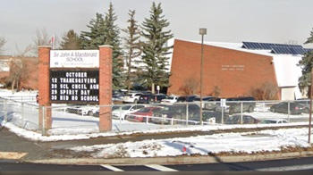
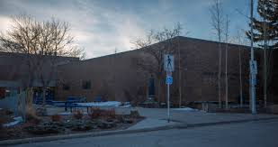
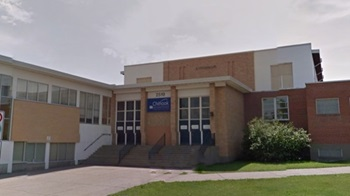

My Education History
North Haven Elementary School
From Kindergarten to Grade 6. I went to a school in Calgary called North Haven Elementary School located in North West Calgary. Here I made some great memories, with going of field trips, sports events and school events. Throughput the 7 years I was here, I made some of closet friends, that I still am friends with to this day.

Sir John A Macdonald Junior High School
I went to SJAM for grades 7 to 9. Here I also made some of my closet, and I found my friend group, that we still have today. At SJAM I had some great times. With being on sports teams, being in Student Council, Dance, Graduation and being able for the first be able to enjoy my passions in option classes. Such as foods, construction, Computer Science.
John G Diefenbaker High School
I attended High School at John G Diefenbaker. To be honest High School was werid time forme. As throughout high school I was hit with the pandemic, up until Semester 2 of Grade 12. Until then the Covid-19 pandemic took over my high school experience, with some of it being online and some in person. In grade 12 some things did become normal, and I did have a great time in grade 12, making new friends and great memories. But in general high school was remembered as the COVID years.
Chinook Learning Services
I took a year of school and for one semester, I felt liked I had to upgrade one of my classes which was Biology 30. As I did finish the class with a 83. But I didn't think that was good enough for uni. So I went back CLS which is James Fowler High School and upgraded there for a semester.
Mount Royal Unvieristy
Currently I am attending Mount Royal Unviersity, taking a degree in Computer Information Systems. It was at first hard to adjust from the high school work load to the university work load. But after a couple months, I was use to it, but that dosen't mean it has been eazy. It has still been hard, with uni having its ups and downs. But one thing I have learned that I didn't really use in High School is learn from your mistakes and see how to fix them, instead of sulking over you getting a bad grade.